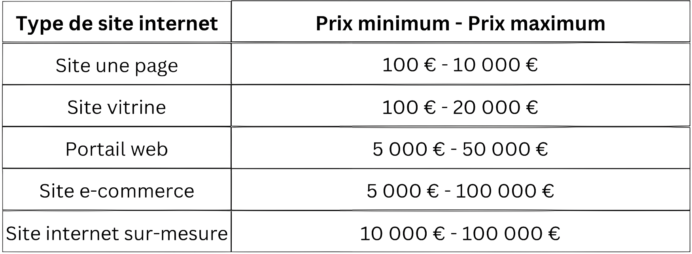

Services de développement Web
⛛
Développez votre entreprise avec des services de développement Web personnalisés
Choisir le meilleur partenaire de développement Web est crucial pour créer un produit numérique réussi. Le bon partenaire peut appliquer les meilleures solutions technologiques pour créer une application sécurisée et stable qui offre une expérience utilisateur exceptionnelle.
Marques avec lesquelles nous avons travaillé


L'importance du site Web
Le site Web est devenu une partie essentielle et importante de la vie humaine. Chaque entreprise a besoin d'un site Web pour présenter ses compétences, ses produits, ses talents et bien plus encore. Tout peut être formé et mis à jour avec un site Web. Hyperlink InfoSystem comprend les nécessités et conçoit des sites Web et des systèmes CMS exquis pour les start-ups ou les entreprises. Nous sommes la principale société de développement Web sur mesure, fournissant les meilleures solutions Web et CMS à travers le monde.

Les technologies et services que nous utilisons pour le développement de sites Web et de CMS
Développement Web WordPress
PHP
Développement Web personnalisé
Drupal
CakePHP
E-commerce et développement de CMS
Développement d'API
Application Web progressive (PWA)
Un fournisseur de services informatiques parfait pour tous vos besoins Web !
Excellente qualité livré à temps
Communication efficace et continue
Confidentialité totale
Convivial et cordial dans la nature
Équipe expérimentée
Compétence technique complète
Assistance absolue
Processus que nous suivons
 (1).png)
Coût de développement web

Qui devrait faire partie de l'équipe de développement Web ?
• Chaque équipe a besoin d'un leader qui assumera la responsabilité de prendre les décisions les plus importantes et ouvrira la voie à l'objectif de l'équipe. Dans une équipe de développement Web, le poste est connu en tant que chef de projet, qui contrôle tous les processus tout au long du projet. Leurs tâches comprennent :
-Communication avec un client.
-Planifier le projet et fournir des estimations de temps.
-Planifier les efforts nécessaires en matière de ressources humaines et la répartition des tâches.
-Coordination du travail conjoint des autres membres de l'équipe.
Architecte de projet
• Un architecte de projet peut engager la discussion avec un client. Sur la base des informations qu'ils reçoivent, ils peuvent décider de l'architecture la plus adaptée aux besoins commerciaux du client. Après avoir approuvé l'architecture, l'architecte peut être employé à temps partiel mais reste en charge de tout ce qui concerne l'échange de données frontend-backend-base de données et plus tard - l'intégration d'applications Web.
Concepteurs UI/UX
• Avant que la conception d'applications Web ne soit implémentée dans le code par les développeurs frontaux, elle se manifeste dans les mises en page et les structures filaires. Et même avant cela, une recherche approfondie de l'expérience utilisateur est véhiculée afin de comprendre les attentes du public cible de la future web app. Sans cette entrée, une application Web peut ne pas répondre aux besoins de ses utilisateurs.
Il est difficile de donner à un concept abstrait d'interaction homme-machine une forme tangible et visible. Et c'est rarement fait dès la première tentative. Créer quelques variantes d'une future interface utilisateur, les améliorer à chaque session de révision, et enfin choisir la plus réussie - c'est à quoi ressemble la participation à un projet de développement d'applications Web pour la plupart des concepteurs UI/UX.
Lorsque vous recherchez des personnes qui correspondent à ce poste, concentrez-vous sur les compétences analytiques et psychologiques (= capacité à comprendre l'état d'esprit de leurs utilisateurs), l'ouverture d'esprit (= disposition à prendre en compte l'apport de l'extérieur) et, naturellement, les compétences en conception graphique. Ne vous attendez pas à ce que les bons concepteurs UI/UX soient également des développeurs front-end. Bien qu'interconnectées, la conception UI/UX et sa mise en œuvre sont des tâches complètement différentes qui nécessitent des compétences différentes.
Développeurs web
• Le développeur de logiciels est le premier rôle qui vous vient à l'esprit lorsque vous pensez à constituer une équipe de développement de sites Web. Après tout, ce sont les développeurs qui constituent généralement la plus grande partie d'une équipe. Il y a trois rôles à prendre en compte lors de la recherche de services de développement Web.
-Développeur frontal:
Les développeurs frontaux (également frontaux) travaillent du côté client d'une application Web. Ils prennent en charge la conception visuelle et les prototypes créés par un concepteur UX/UI pour développer une interface utilisateur (pages Web) et s'assurer qu'ils sont réactifs et fonctionnels sur tous les navigateurs et appareils.
L'ensemble minimum de compétences techniques pour un ingénieur frontend est HTML/CSS, JavaScript et TypeScript, ainsi qu'une gamme de frameworks frontend modernes, de bibliothèques et de plates-formes pour créer des applications évolutives interactives (React.js, Angular, Vue.js).
-Développeur back-end:
Les développeurs backend (également backend) écrivent du code côté serveur et travaillent avec la logique backend, les bases de données et l'infrastructure de l'application Web. L'ingénierie backend moderne nécessite différentes compétences techniques (.NET, Java, Python, Node.js, Go, etc.) et une expérience de travail avec les services cloud, les solutions de gestion de données et les pratiques de déploiement.
-Développeur full-stack:
Si vous avez besoin de développer une application Web avec une interface complexe hautement interactive et un backend gourmand en données, vous souhaiterez peut-être engager des ingénieurs full-stack maîtrisant à la fois les technologies backend et frontend. En règle générale, il s'agit d'un rôle senior qui implique qu'un développeur peut faire de la programmation backend et base de données et utiliser des frameworks frontend pour développer des interfaces complexes.
L'embauche de développeurs full-stack vous donnera un avantage car vous pouvez tirer parti de plus d'expérience et de compétences avec une équipe plus petite.
Spécialistes de l'assurance qualité et des tests
• Étant donné que la responsabilité d'un spécialiste de l'assurance qualité Web est d'assurer une approche systématique de l'AQ à toutes les étapes de développement, il est important de lancer les processus d'AQ au tout début du projet. Les tests, cependant, sont plus étroitement liés au produit, il est donc logique de les lancer après la disponibilité des toutes premières versions du frontal.
N'oubliez pas que, comme les spécialistes des tests s'assurent que l'application Web est entièrement fonctionnelle sur la plupart des navigateurs populaires et leurs différentes versions, de nombreux problèmes sur lesquels ils se heurtent seront liés à l'expérience utilisateur et peuvent potentiellement faire reculer le projet. Cette possibilité doit être prise en compte lors de la planification initiale par le chef de projet.